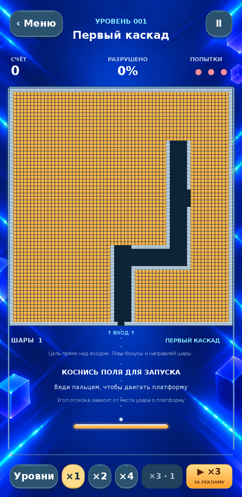
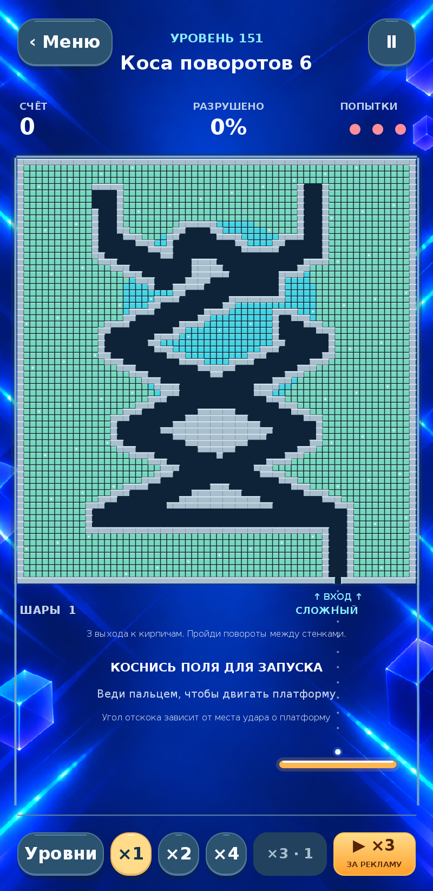
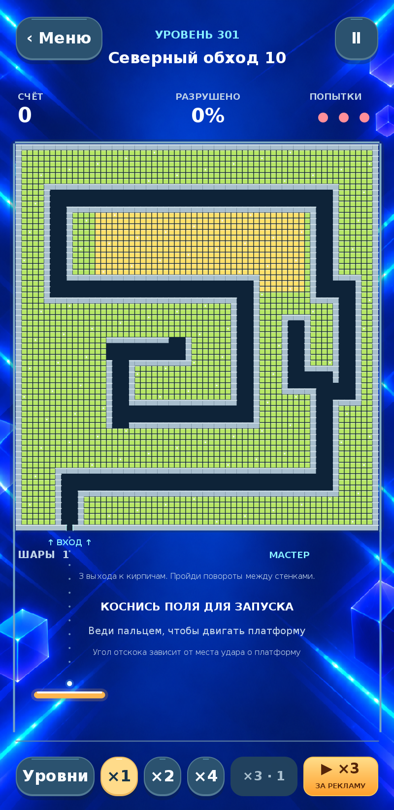

01 / НАПРАВЬ
Поймай нужный угол
Двигай платформу пальцем и отбивай шары. Место удара о платформу определяет, куда полетит следующий шар.
Арканоид · головоломка · Android
Направляй шары в узкие проходы металлического лабиринта. Выбирай угол удара, добирайся до цветных блоков и запускай каскады.
Скачать в RuStoreУ каждой стены есть проход
Соединённые поля кирпичей скрываются за металлическими стенами. Узкие входы и повороты меняют траекторию: точное попадание открывает дорогу к следующему каскаду.



Управление одним пальцем
01 / НАПРАВЬ
Двигай платформу пальцем и отбивай шары. Место удара о платформу определяет, куда полетит следующий шар.
02 / УСИЛЬ
Лови выпадающие бонусы: добавляй шары, умножай весь летящий рой, расширяй платформу или включай защиту.
03 / ПРОЙДИ
Разрушай блоки, получай звёзды и открывай следующие уровни. Скорость можно переключить: ×1, ×2 или ×4.
Заряд ×3 можно получить за добровольный просмотр рекламы прямо в меню или в игре. Доступны также продолжение после поражения и защитная стена. Для рекламных зарядов действуют ограничения; запас и таймер видны в игре. Обычная реклама появляется между уровнями после третьего.
Перед первым запуском
Основные уровни работают офлайн. Для загрузки рекламы, получения рекламных наград и открытия внешних ссылок нужен интернет.
На этом устройстве. Обновление поверх установленной игры сохраняет данные. Удаление приложения или очистка его данных может удалить прогресс; облачной синхронизации нет.
Кнопка ×3 утраивает все летящие шары в пределах технического лимита. Заряд сначала поступает в запас, а применяется отдельной кнопкой после запуска шара. Использовать заряд можно один раз за попытку уровня.
В актуальном обновлении используется Рекламная сеть Яндекса: реклама между уровнями и добровольные просмотры за награду. Встроенных покупок в игре нет. Доступность объявления зависит от сети и рекламного сервиса.
Укажи название игры, номер уровня, версию приложения и модель устройства.